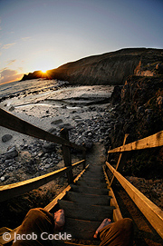
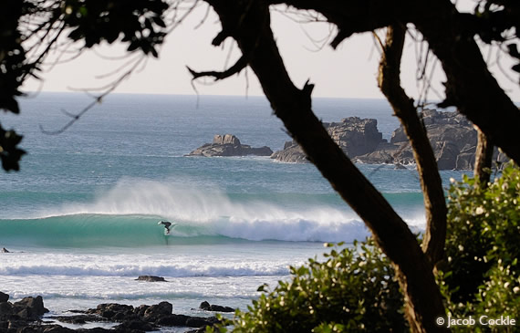

Beaches in Penwith
Stretched around the Land’s End Peninsula, you can find some of England’s nicest and highly rated beaches. From small secluded beaches in romantic coves to long open stretches of golden sands, the Penwith coastline has the beach you’re looking for on that relaxing British summer’s day. The beaches in the area are amongst the cleanest in Europe, many of which have won the coveted Blue Flag Award.
The closest beach to Penzance is the long, sand Marazion/Long Rock beach. Set in the heart of Mounts Bay, and looking onto St Michael’s Mount. To the West of Penzance, the intimate beach at Mousehole sits just off the harbour. Further along the coast is almost tropical Porthcurno beach with its white sand and clear waters, it would not look out of place in the Caribbean Islands.
The North Coast of Penwith past Lands End lies the gem in Cornwall’s surfing crown. Sennen's mile long stretch of golden sands is world famous in the surfing and body boarding community, and is perfect fro those who want to try their hand at the challenging sport. Beyond the breath taking cliffs is St Ives and Carbis Bay, each containing several excellent beaches in both open stretches and sheltered coves. Along from St Ives is Hayle, with three miles of golden sands.
- Be sure to check out the board sports page for more surfing info

South Coast |
North Coast |
St. Ives |
Hayle |
Prussia Cove |
Nanjizel |
Porthmeor Porthgwidden St. Ives Harbour Porthminster Carbis Bay Porthkidney |
Hayle Towans Mexico Towans Beachside Upton Towans Peters Point Gwithian Godrevy |